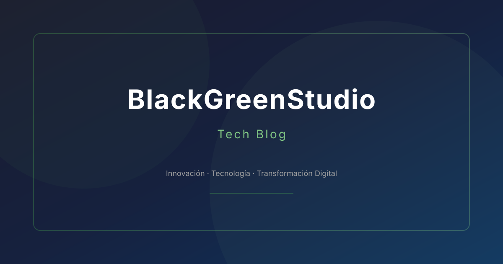

Evolución del Desarrollo Móvil con IA Integrada
Cómo estamos implementando modelos de ML en dispositivos móviles.
Continuar leyendo →Tendencias, guías prácticas y casos reales de transformación digital

En BlackGreenStudio hemos identificado las tres tendencias tecnológicas que están revolucionando la industria:
Implementamos estas tecnologías en el sistema de gestión para HidroNexus, logrando un 35% de mejora en eficiencia operativa.
Cómo estamos implementando modelos de ML en dispositivos móviles.
Continuar leyendo →Las herramientas que estamos adoptando:
Nueva guía disponible que cubre evaluación de madurez digital, roadmap personalizado y métricas clave.
Descargar GuíaProyectos donde aplicamos IA generativa: generación automática de contenido, prototipado rápido y asistentes virtuales.
Ver casos →